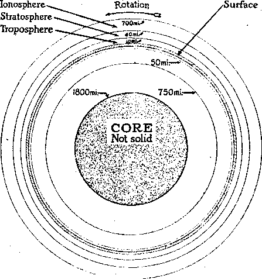
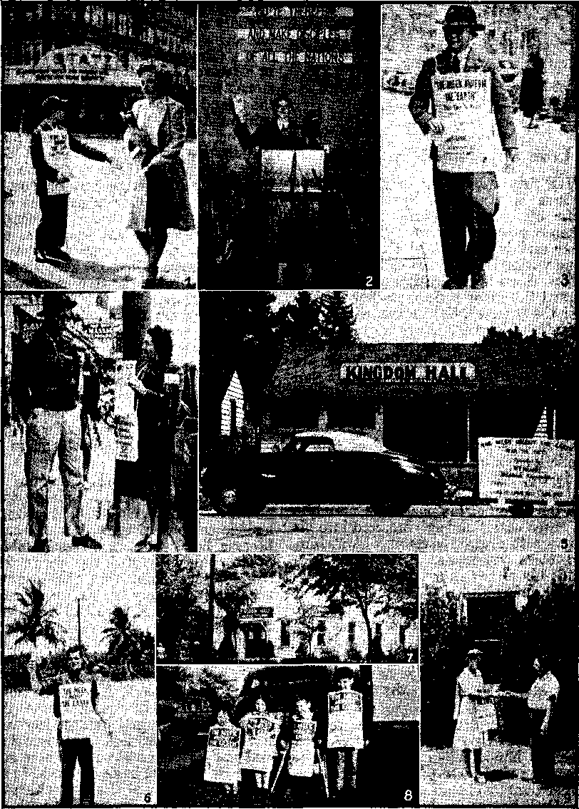
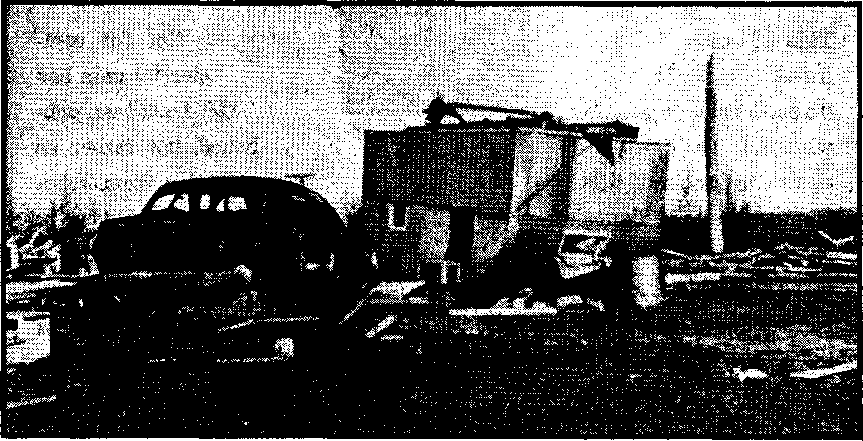

Contents
garth's Annular Structure (Drawing) 5
The Troposphere Is Nearest to the Earth 6
JHave You Ever Heard of the PWAf
“Thy Word Is Truth”
“With His Own Hands in Honest Industry” 18
Lawbreakers’ Brazen Impudence y 20
* The Rare Sport of Inside Burglary
Blessings in the Evening of Lafe
Manifestly He Never Consecrated
The Shepherd Is Finding His Sheep
A Well-nigh Miraculous Deliverance
Published every other Wednesday by
WATCHTOWER BIBLE AND TRACT SOCIETY, INC.
117 Adams St., Brooklyn 1, N. Y-, U. 8. A.
' OFFICERS
President N. H. Knorr
Secretary W. E. Van Amburgh
Editor Clayton J. Woodworth
Five Cents a Copy
$1 a year in the United States ■, 11.26 to Canada and all other countries
NOTICE TO SUBSCRIBERS
Remittances: For your own safety, remit by postal or express money order. When coin or currency is lost tn the ordinary mails, there is no redress. Remittances from countries other than those named below may be made to the Brooklyn office, but only by International postal money order.
Receipt of a now or renewal subscription will be acknowledged only when requested. Notice of Expiration Is sent with the journal one month before subscription expires. Please renew promptly to avoid loss of copies. Send change of address direct to us rather than to the post office. Your request should reach us at least two weeks before the date of issue with which it is to take effect. Send your old as well as the new address. Copies will not be forwarded by the post office to your new address unless extra postage Is provided by you.
Published also in Greek. Portuguese, Spanish, and Ukrainian.
OFFICES FOR OTHER COUNTRIES
Argentina Calle Honduras 6646-18. Buenos Aires Australia 2 Homebush Rd.. Strathileld, 1ST. S. W.
Brazil Rua Lie in io Cardoso 330, Rio de Janeiro Canada ■ 40 Irwin Ave., Toronto 5, Ontario, Canada -England 34 Craven Terrace. London, W. 2
Mexico ' Calzada Melchor Ocampo 71, Mexico, D. It. South Africa 623 Boston House, Cape Town
Entered as second-class matter at Brooklyn, N. Y., under the Act Of March 3, 1879. !
Churchill and Dunquerque
♦ It is a matter of history that when the British troops were evacuating Dunquerque one of the greatest comforts they had in their hour of trial and disappointment was a group of Jehovah’s witnesses right on the beach who cheered them with the good news of Jehovah’s kingdom. Some of the troops said they could never forget how the phonograph records that were played for them at that time cheered them. They could see that there are better times ahead for all that wish to do right.
In that hour the public hero, was Winston Churchill, and he showed that he is' a good deal of a man. What he has done since then is also a matter of history and needs no review here. But he forgot about Jehovah God and His faithful witnesses. Both he and his son went to see the pope, who is now and has always been a worshiper of the Devil. And Churchill took his stand on the side of the pope, and on the side of that other son of the Devil, Franco, and he at least permitted, if he did not order, together with Morrison, that the export and import of The 'Watchtower and Consolation should be prohibited.
Now see what has happened. In the United States, though Mrs. Roosevelt said kind words for Jehovah’s witnesses which the American newspapers did not have the intestinal fortitude to publish, yet Mr, Roosevelt himself never lifted a finger to protect them when the terrible tide of violence against them raged ' through America in 1940, Four years passed and Mr. Roosevelt approached his hour of triumph. He was to be the great, figure at the San B’rancisco conference. And in the hour of his triumph he died.
Now see what has happened in Britain. Churchill came to his hour of triumph at Potsdam. Many people believed him to be at that time the most powerful man in the world. Today he is a ruined politician. The British people have'repudiated him, and he can never rise again from the abyss into which be has been cast.
“And in Uis name shall the nations hope.”—Matthew 12:21, A.S'.V.
Volume XXVI Brooklyn, N. Y., Wednesday, August 29, 1945 Number 677
Structure of the Earth
THE earth is the planet God created for mail's everlasting home. It is the only planet God has honored by sending to it Uis “only begotten Son7’. It is spherical in form, is constantly in motion, and is one of the units of the vast solar system. It is moving ever onward in majestic silence and with unerring precision amidst the canopy of the heavens. It consists of solid and liquid material within its interior and a gaseous envelope around it. ,
Being man’s everlasting home, how is the earth constructed'? Does the interior of the earth consist of a homogeneous mass of material, and does this extend all the way to the very center, or is the interior built up of discrete layers all diverse from each other? What lies in the great ocean of atmosphere above us? Is it possible to obtain any information about these great expanses where man cannot penetrate, and, if so, how? These and many other questions of like nature are of interest to all people who never cease to wonder at the marvelous works of God’s creation. Only during comparatively recent years have partial answers been found to some of such questions. With the advent of the day of general increase in knowledge of many subjects and the invention of electronic instruments of every conceivable variety, certain facts have been learned about the structure of the earth which formerly were dark and mysterious. What are some of these facts?
Astronomers have long known from devious mathematical computations that the distance to the center of the earth at the equator is 3,963 miles. The atmosphere around the earth rises to a great height, the average density of which gradually tapers off at an exponential rate toward zero. That portion about which we arc here interested rises to a height of more than 700 miles. From the standpoint of its density, practically all of the atmosphere lies below a height of 100 miles. The greatest height to which man has ever ascended in the atmosphere is thirteen miles, and the greatest depth to which he has probed the earth directly with tools is about two miles. Fifteen vertical miles, then, represents the maximum distance man has had direct observation of earth’s structure (including the 700 miles above the earth’s surface), a small fraction indeed of the 'total radius of 4,663 miles.
To explore the remaining uncharted regions in and about the earth is analogous to trying to determine the contents of a dark room without the possibility of entering it, and, in the case of the deep interior of the earth, without the possibility of even looking in. Although seemingly impossible, there are ways of doing this, ways that are scientific and logical and are not dependent upon any chimerical schemes. How this is done is one of the marvels of our day. At the outset it may be said that, in general, the conclusions deduced by the workers in this field of research are reasonable. Details thereof, however, may need to be revised in time when more accurate information is obtained.
The Measuring Sticks
Suppose some dark night you should go outdoors and throw a ball with all your might out into black space, and suppose that after a moment or two you should find the ball suddenly bouncing back towards you. What would be your conclusion? You will answer, it struck some object out there in the darkness which caused it to bounce back. But, in-’ stead of bouncing back, why did it not reflect or glance off in some other direc' tion? It would have done so had the ball struck the object at some other angle than it did. Moreover, the direction it would havS taken would have been one which obeys the physical law: “The angle of reflection is always equal to the angle of incidence.” Sound waves, light waves, radio waves, and, in fact, vibrations of any type, mechanical or electrical, in general obey this same law provided all other factors involved remain constant.
Again, it can be demonstrated that ■when vibrations are set up in some elastic medium, such as sound waves in air or mechanical vibrations in solids, the velocity with which the waves will travel through the medium is a function of the elasticity and density of the material. That is to say, the more dense the ma-. terial is, the longer will be the time interval required for the vibrations to pass through, and the more elastic the material, the less will be the time required. The principle involved is stated in the physical law which says: “The velocity of propagation of a vibration through an elastic medium is proportional to the square root of thei elasticity and inversely proportional to the square root of the density.” These two common physical laws along with a third one which relates to refraction angles, give us a clew as to how it is possible - for one to probe into the mysteries of earth’s deep interior structure although it is impossible to see it.
Man cannot penetrate directly the depths below nor the heights above; therefore he must employ an agent of, some kind which can penetrate those regions and bring back the information desired. For exploring the interior of the earth just such an agency is at hand in the form of vibrations be they mechanical or electrical. Before one can use them for exploring purposes, however, it is necessary to learn how to read their “handwriting”, so to speak.
But, you may ask, how can a human creature create vibrations powerful enough to travel to the center of the earth and back again? True, imperfect man cannot do so. However, there are certain natural forces which can be used for that very purpose, and, amazing as it is, these forces originate within the earth itself. And what are’they, do you ask? The answer is, “Earthquakes I” Occasionally earthquakes occur which are powerful enough to be detected on any part of the surface of the earth. If these natural vibrations are accurately measured in every conceivable manner possible, they yield up valuable information about the media through which they have passed. Strange as it may seem, earthquakes do have some value even though at times they play havoc with the works of man.
Types of Earthquake Waves
Research workers in this field of endeavor have learned from experience that earthquake waves or vibrations are of three distinct types. These are known as longitudinal waves, transverse waves, and surface waves, respectively. Each of these has its own peculiar type of behavior. For instance, longitudinal waves travel faster than either the transverse or the surface waves. And it is known that transverse waves* do not pass, through a substance that has the characteristics of a liquid or gas; instead, they disappear completely. This latter property discloses a surprising fact about the core, of the earth which will be noted shortly.
By studying the different types of earthquake waves and noting their time
and direction of arrival at many different points on the surface of the earth, and then by correlating this data, some of the secrets of the earth’s interior structure have been divulged. Needless to say, to measure accurately the time and direction of arrival of such waves emanating from points thousands of miles away requires delicate instruments of the highest precision. Only today are such instruments possible, the day of electronic devices, -and therefore a time for learning more about God’s wonderful creation.
Earth’s
Earth’s Annular. Structure
to the center at 3,963 miles. The one next One of these astronomers, notably Hal-to the surface can be subdivided into ' ley of “Halley’s Comet” fame, reasoned
Onion-like Layers Using such instruments in conjunction with the aforesaid well-known physical laws and some higher mathematical computations, it is found that the interior of the earth is not composed of a uniform mass of material, but, instead, is divided into many discrete identifiable onion-like layers, having diverse characteristics one from another. These layers are not mere shells of a matter of feet and inches in thickness, but are gigantic areas many miles in dimension. Hour of these are outstanding and of major importance. The first extends from the surface to a depth of 50 miles; the second, from 50 to 750 miles; the third, from 750 to 1,800 miles; and the fourth, from 1,800 four other layers of lesser magnitude having boundaries at about 7, 23, 37, and 50 miles, respectively.
The four major layers have distinct boundaries at the depths of 50, 750, and 1,800 miles, as is indicated by an abrupt change in the .density of the material of each' adjoining layer. Measurements show that the density of each successive layer increases with its order of depth. That of the first, which lies near the surface, is about three times that of water, whereas that of the fourth, the innermost composing the core, has a density ’ of nine times that of water. The average density of the entire earth is 5£ times that of water.
The fact that there is a wide demarcation in the characteristics of each individual layer is what makes their detection possible. The^core of the earth, that portion at the center having a diameter of 4,326 miles, it is believed, is not a solid at all. The behavior of the transverse waves when they arrive at the boundary of this layer indicates that this region is either in a liquid state or is composed of gas. If it is composed of gas, perhaps it is some strange kind having high density and which is totally different from any known here on the surface of the earth.
It is not entirely improbable that the conjecture made by some eatly astronomers concerning the nature of the deep interior of the earth has foundation.
that the interior of the earth may be another sphere revolving on its own axis independently of the remainder or outer
shell of the earth. Halley’s basis for such a conclusion was that such an interior structure could account for certain vagaries in earth’s magnetic field which were not understood at that time and which he endeavored to explain.
Whether the central 4,326-mile-diam-'^ter core is in a liquid , state or a gaseous state, or whether it consists of another sphere having its own dense gaseous atmosphere, is not definitely known. However, it is positively known that the central portion making up the core of the earth is totally different in density and structure from the remainder of the earth. Support is lent to this conclusion by observing the design pattern the Creator uses in the construction of. spherical objects here on the surface of the earth. For example, fruits of various kinds which are spherical in form generally have a core structure entirely different from the main body. Also, a most striking example of the same principle can be observed in the structure of hailstones. Not only is a similar core structure in evidence, but also the ringlike bhdy layers are well defined.
Layers of the Atmosphere
Turning our attention now to that portion of the earth which is above us, the 700 miles or so of the circumambient atmosphere, are there any evidences that • discrete layers or “rings” exist in its structure? In what manner is-it possible to gain any information about this great expanse the major portion of which is totally inaccessible?
In some respects the exploration of earth’s circumambient atmosphere does not present so many formidable obstacles as does the exploration of the interior of the earth; therefore more reliable information may be had about it. Here we have the valuable aid of light, sight, and sound. Other tools Available for exploring this region, each of which contributes its bit of information in its own particular way, are such as cosmic rays, ultraviolet light, the aurora borealis and aurora australis, meteors, radio waves, earth’s magnetic field, sun spots, and electrical storms. For exploring that portion of the atmosphere lying adjacent to the surface of the earth there are such tools as planes, balloons, radio sondes, and sound waves. Also, much valuable information is obtained in an indirect way from laboratory research with such instruments as Geiger-Muller counters, cyclotrons, betatrons, mass spectrographs, and radioactivity. Just how each of these is employed to gather the information is beyond the scope of this article. Only a brief reference can here be made as to how some of them are used.
Various types of measurements made with electronic devices during recent years indicate that the upper atmosphere is indeed built up of concentric onion-like layers each different from the others in many respects, just as in the interior of the solid portion of the earth. It does not consist of a simple uniform structure which gradually tapers off towards zero density as the height increases. The same design pattern is followed here as in the solid portion below us, that is, a diversity of structure is in evidence. There are at least three identifiable layers of major importance, and interspersed with these three there are two “heat belts” and at least three zones at various heights which act as reflectors for radio waves. The three major layers have been given the descriptive names of troposphere, stratosphere, and ionosphere. Of the two heat belts, the first lies in, the region of the stratosphere and the second in the ionosphere. Of the .three radio wave reflectors, one lies in the stratosphere and the other two in the ionosphere. t
The Troposphere Is Nearest to the Earth
The troposphere is the layer which lies directly in contact with the surface of the earth and rises to an average height of about ten miles. Being the nearest,
CONSOLATION ■ I quite naturally the most accurate and detailed information may be had about it. The outstanding characteristic of the troposphere is its constant change. In fact, it may be said that the only thing constant about it is its changeableness. Temperature, humidity, winds, light, clouds, barometric pressure, ultraviolet radiations, and a host of other variables are never at re^t, but are always changing from day to day, year in and year out. In this layer occur the innumerable vagaries which go to make up the weather. It is well known that the magnitude of some of these can reach gigantic proportions, resulting in such whirling dervishes of the skies as cyclones, hurricanes, and tornadoes, with their accompanying destructive floods and other devastations.
Of the many variables found in the troposphere, that of temperature is of particular interest; for measurements made by the use of automatic recorders on balloons called radio sondes disclose the interesting fact that the temperature does not continuously decrease at a uniform rate as the height is increased. In general, the temperature does decrease with height, but only up to a certain point This point in the upper atmosphere where the temperature ceases to decrease is what marks the boundary between the troposphere and the stratosphere. At this point the temperature either remains constant or reverses itself with a further increase in height.
Strangely enough, the height of the point where temperature inversion sets in is not the same in all parts of the earth, but there is a wide difference as between the poles and the equator. At the equator this point is at a height of about thirteen miles, while at the poles it is at the much lower height of about four miles. Thus the thickness of the tropospheric layer is more than three times as great at the equator as at the poles. Also, another curious fact is observed. Whereas the temperature at this point of inversion may be as low as 112
AUGUST E9, 1945
degrees below zero in the equatorial region, at the poles the lowest is only about 58 degrees below zero, approximately half as much. An interesting paradox of nature that. In the sub-stratosphere it is actually colder at the equator than at the poles. This fact may be watched with interest, for it will probably have some bearing on the mapping of air-line routes in the future when stratoliners come into general use world-wide.
The Stratosphere
Directly above the troposphere lies the stratosphere. This layer has the form of a spherical shell which completely surrounds the earth and extends from the troposphere upward to a height of about 40 miles. As its name indicates, here lies a stratum the characteristics of which are comparatively uniform, particularly so in the region adjoining the troposphere. The temperature is more constant, air currents are more stable, and in many respects this is a region approaching the ideal for airway travel.
Rising to a higher level in the stratosphere, in the vicinity of from 20 to 40 miles, the situation is quite different. In that region there is considerable variation in temperature from day to night due to the influence exerted by a dense layer of ozone believed to exist at that height. Because of the concentrated amount of ozone, this portion of the stratosphere has been given the descriptive name of “ozonosphere”. That the . gas composing this layer is ozone is deduced from several lines of reasoning. First, laboratory experiments prove that .ultraviolet light and other radiations ' from outer'space acting on oxygen transform the oxygen into ozone. And, second, meteors that have succeeded in penetrating the stratosphere in their downward plunge from outer space instantly flash up brilliantly when they enter this layer. The sudden transformation of the meteors into incandescent gases is due to the greatly increased resistance this
7
layer presents to the high-velocity projectile-like meteors.
A spectroscopic analysis of the light thus emitted by these incandescent meteors reveals the presence of ozone. It is known that a dense layer of some kind of gas must exist at this height, because sound waves, also long radio waves, are reflected from it. During the first World War, it is reported, on certain occasions the cannonading in Belgium was distinctly heard across the Straits in England. For sound to he heard at that distance indicates that the reflector must be at a considerable height. Computations point to the ozonosphere. Similar computations with long radio waves indicate likewise. Balloonists who have risen to the sub-stratospheric level report that they have heard earthborn sounds emanating from points above them, not below, mark you, indicating some kind of reflector overhead.
Since there are strong circumstantial evidences to substantiate the belief that a layer of ozone exists there, what effect could it have upon the atmosphere below it? Laboratory experiments prove that ozone is opaque to ultraviolet light, and that material such as rubber immediately disintegrates when exposed to ozone. The ozonosphere being at a high level above the major portion of the atmosphere and being relatively dense in structure, a great amount of heat must be generated in this layer due to the direct absorption of the sun’s ultraviolet radiations. It is estimated that the daytime temperature rises to as much as 200 degrees above, not below, zero. The nighttime temperature, though, drops to that of the normal stratospheric level, which, as noted heretofore, is about 58 degrees below zero.
This great daily temperature variation, a total of 258 degrees, must cause air currents in the ozonosphere of prodigious proportions. That such do actually exist can be observed directly. Some meteors that have succeeded in entering this layer leave behind them trains of incandescent gases which sweep across the sky at a high rate of speed. A strong wind must be the cause. This great agitation does not seem to have much effect upon the sub-stratosphere, miles 'below. Experience testifies that there the air currents are more stable.
It was said that ozone is opaque to ultraviolet light. The ozonosphere, then, may be considered to be a barrier placed high in the sky which regulates the amount of ultraviolet light reaching the earth. The proper amount of ultraviolet light is highly beneficial for the health* and well-being of plant and animal life. Too much is destructive. Here, then, is demonstrated the wisdom of the great Creator in providing protection for His creatures on earth.
The 700-Mile-High Ionosphere
The third major layer of the atmosphere extends from the stratosphere upward to a height of 700 miles. It has ' been named the ionosphere,. Some men apply the term to the narrow zone within this layer at the height of between 60 and 65 miles which acts as an electrical ■ reflector for short radio waves. This electrical reflector, though, is more prop- ■ erly termed the “E” layer, or, as those who prefer to honor creatures rather than the Creator call it, the Kennelly-ITeaviside layer. Meteorologists correctly apply the term ionosphere to the entire layer rising to an approximate height of 700 miles. Its name indicates that “ionization” plays the leading role in this layer; and, in fact, it does. So let us see what is meant by that term before we proceed farther. ■
In the broad sense, ionization simply ' means the process whereby a liquid or gaseous substance is rendered electrically conductive. To understand how this is done, let us enter the realm of the infinitesimally small, the sub-microscopic world. The building blocks of this world are called “protons”, “neutrons,” and > “electrons”, which together constitute atoms of matter. There are millions of
atoms in one cubic inch. Centering our attention on just one of these atoms, what do we see? Should the atom happen to be one of hydrogen, we shall see a simple miniature solar system having a t, sun-like nucleus named a “proton”, and, amazingly, around it there is rotating at terrific velocity a tiny little planet-like unit named an “electron”. The relative dimensions of the electron and proton and the distance between them is comparable to that of the sun and planets of the solar system. Therefore, the atom consists mostly of empty space.
The hydrogen atom is the simplest of all the atoms of the ninety-two known elements. An oxygen atom contains eight electrons rotating around its nucleus. Uranium, the most complex, has ninety-two electrons associated with its nucleus. No two elements are alike. The only distinguishing difference as between any two of the elements is in the structure of the nucleus and in the number and arrangement of the planetary electrons rotating around it. These atoms in their normal state are electrically neutral; that is, the electron always carries a definite, fixed amount of negative electrical charge which is exactly equal and opposite to the positive charge on the protons of the nucleus. Thus the electron is bound to the nucleus by the coulomb force created by the equaland opposite electrical charges.
Now suppose that some means be provided whereby myriads of high velocity projectiles, such as radiations from the sun or cosmic radiations from outer space, be made to penetrate a large group of such atoms of a gas. Even though the atom is nearly all “emptiness”, yet the chances are finite that some of the projectiles will strike some of the atoms. When this happens, and if the force of the impact be great enough, one or more of the electrons rotating in the outer orbit of the atom will be dislodged from the atom. When an electron is so removed from the atom the atom is no longer in its neutral state, because the electrical balance has been destroyed by the removal of the negative electron. In this state of unbalance the atom is positively charged. The electron with its negative charge, because of having much less mass than the protons, is free to be influenced by any other electrical field in its vicinity. When in this condition the electron will obey the natural law; “unlike charges attract; like charges repel each other.” Motion is thus imparted to it, and an electron in motion constitutes an electrical current.
Multiply the number of electrons in motion by billions and there results an electrical current of great magnitude. Should this ionized gas be located between two metallic plates, one ofAvhieh has a positive charge and the other a negative charge, an electrical current will flow from one plate to the other through the gas. Such a current exists in the ionosphere due to the atomic bombardment and the influence of earth’s magnetic poles which simulate the charged plates.
Bombardments Equivalent to
Billions of Electron Volts
In the ionosphere the process of ionization takes place on a gigantic scale. What are equivalent to projectiles hurled from outer space are cosmic rays, ultraviolet light, and other radiations of various types known and unknown. These radiations strike the rarefied gases in the upper atmosphere with such tremendous force that their effect is measured, not in thousands or millions, but in billions of electron volts. The resuit produced by this electronic bombardment can be imagined. It is atomsmashing de luxe.
. In an ordinary vacuum tube such as is used in a radio receiving set operat- . ing with but a few volts, the plate of the tube can become red-hot almost instantly from the minute electronic bombardment. What must be the effect when forces equivalent to billions of volts are used as up in the ionosphere, where electronic bombardment is carried on in a colossal manner? That such powerful electrical forces do actually exist in the ionosphere is known from direct measurements of their secondary effects in the troposphere by the use of Geiger-Muller counters and associated equipment. It is only during the past decade t^at these forces have been discovered and measured. Research workers in nuclear physics have learned a little about how to duplicate in miniature such electronic bombardment' as exists up in the sky continuously.
A laboratory device called a “cyclotron” and more recently another instrument named a “betatron” can develop potentials equivalent to 100 million electron volts or more. Even with this relatively small amount of potential, a vast new world is now being envisaged wherein transmutation, radioactivity, and electronic bombardment will play an important role. Xo longer is the transmutation of one element into another an alchemist’s dream. Today it is an accomplished fact. Research like this explains why it is believed that there exists a belt of extremely high temperature in this layer high up in the sky called the ionosphere. Some research workers estimate that the temperature may be as much as 1600 degrees Fahrenheit. At that temperature iron would flow as a liquid.
The ionosphere contains at least two regions which act as electrical reflectors for short radio waves. The lower already identified as the “E” layer, at the height of 60 to 65 miles, remains substantially constant throughout the year. The second reflector, higher up, is iden-. tilled as the “F” layer. Its height varies from day to night and from summer to winter. At night during the summertime its average height is about 145 miles. In the daytime it splits up into two layers; one, the “F'”, comes down to about 124 miles, and the other, the “If"", goes up to about 218 miles. In the winter there is but one “F” layer, at the average height of 128 miles.
The heights of the various reflectors can be accurately measured by using the same principles that are employed in radar. These reflectors high in the sky make possible world-wide radio broadcasting. Radio stations intended for long distance transoceanic communication are so designed that the power radiated is confined to a narrow beam. Using the proper angle of incidence, this beam is aimed toward these ithiized regions in the sky, and as a result the reflected wave returns to the earth at a great distance from the transmitter and with little loss in power.
In the ionosphere occur the beautiful electronic displays known as the aurora borealis and aurora australis, or northern lights and southern lights respectively. In that the earth’s magnetic field is most intense near the poles, these auroras, therefore, are more brilliant near the higher latitudes. They are caused by electronic bombardment of the rarefied gases in'the upper atmosphere. Some of such auroral displays have been observed as high as 700 miles in the sky and as low as the stratosphere. Their presence and coloring, therefore, is a positive indication of the height of the atmosphere and the nature of the gases at those heights.
Darkness upon the Face of the Deep
'Balloonists who have ascended to high altitudes report that as they ascended the sky gradually became darker. This may appear strange to some people who may think that just the very opposite should be true. A moment’s reflection, however, should convince one of the fallacy of such a conclusion. For instance, you have often seen an oblique beam of sunlight from a window stream across a darkened room. What you saw was not the radiation from the sun, but the light reflected from myriads of dust motes floating in the air. Remove every particle of dust from the air (if that were possible), and the beam of sunlight wotdd become utterly invisible. Were it not for the dust particles, the watery vapor, and the atoms of gas constituting the atmosphere around the earth, the sky would be dark even at noonday. The higher one ascends in the atmosphere, the darker the sky becomes, because of the freedom from dust, a less dense atmosphere, ' and because of being farther removed from the objects on the surface which serve to reflect and diffuse the light. In outer space where there is no matter, either solid, liquid, or gaseous, all is darkness for the same reason.
When the Architect of the earth stated, at Genesis 1:2, Tn the beginning the earth was without form and void; and darkness was upon the face of the deep,’ He must have been revealing a state of development in which waters covered the earth and no atmosphere was in existence. Consequently, "darkness” was upon the “face of the deep” just as the record states. Toward the end, though, of the first 7,000-year creative day the earth had been so developed that the elements began to assume their organized positions. Here then was an agency . which could and did transform the radiations from the sun and make them visible ; hence, insofar as the earth was concerned, light first came into existence. The earth having acquired rotative motion, light and darkness would follow each other in natural sequence, or be “divided”, just as recorded at ’Genesis 1:4.
We see, then, that the present-day conception of the structure of the earth, according to the evidences deduced1 by modern research and mathematical computations, is that the earth does not consist of a homogeneous mass of material, but, instead, is composed of at least seven major identifiable onion-like layers each differing from the others in some respect and many other layers of lesser distinction. What little man knows at present about the wonders of God’s creation is very insignificant in comparison with what still remains to be learned. Throughout the endless ages of God’s kingdom now beginning it will be the blessed privilege of those peoples found worthy to live everlastingly on this earth to ever learn of and enjoy the infinite wonders of God’s creative works. Truly the inspired Word says: “O Lobd, how manifold are thy works! in wisdom hast thou made them all: the earth is full of thy riches.”
AT ABOUT the time that Franklin D.
Roosevelt became president there were some 13,000,000 Americans out of work. The Public Works Administration, started in the spring of 1933, was based on the theory that the expansion of construction in times of depression would relieve stagnation and assist business recovery. The Encyclopedia Americana explains:
Public works construction by State and local governments declined tremendously during the depression, and by the summer of 1933 when PWA began to function such construction had virtually ceased. Most of the municipalities throughout the country had for the two years preceding June 1933 found it difficult or impossible to &ell their bonds; and, in the face of the heavy welfare burdens, and the all-time high in tax delinquencies, the financing of public improvements out of income was out of the question. Had it not been for the financial assistance rendered by the PWA the standards of public service in the thousands of municipalities would have been jeopardized if not seriously impaired. Allotments by PWA have been used for su6h projects as schools, hospitals, public buildings, sewers, water supply, highways, bridges, river and harbor development, national defense, water-power development, reclamation, irrigation and flood control. In addition to this employment, there is the so-called secondary employment that results from the expenditure
of the wages and salaries received by employees at the site of construction and by the workers in the factories, mills, and forests that supply the materials for PWA construction. .
The PWA*continued for years, and so , did the unemployment, but after Pacelli tmd Hitler made their abortive attempt io grab the world the unemployed found employment in war industries, and as soon as those industries are over the 13,000,000 will be as jobless as they were before. That’s the truth; and it is common sense.
The Big Fellows See It Coming
Chairman Krug of the War Production Board recently made a statement in which he said:
As the cutbacks increase, some areas are bound to experience unemployment. In that event, local chambers of commerce, union leaders and business men may urge the government to take special measures, such as providing a public works program, or putting in war contracts to tide over the slump, or making special releases of materials for civilian production. . . . We must prepare to meet such emergencies when they are real; but we must also be prepared to resist the pressure when they would only delay necessary readjustments.
That is quite plain, but the National City Bank of New York, in its June, 1945, review of economic conditions, makes it plainer still. It quotes Mr. Krug approvingly, followed by this one:
We venture, to add to this statement an opinion that the pressures to which Mr. Krug refers will not come wholly from outside the government, but also from elements within it, who believe that public works programs or other government spending are desirable whenever and wherever people are out of jobs, and who constantly'urge the adoption of a legislative policy to that effect.
The bank goes on to say that it disapproves all such plans of help for the helpless or work for the workless; that the states now have in their hands some $6,000,000,000, and that must be used up first; that veterans get $300 anyway when they are demobilized, and that they may even get $20 a week up to as much as 52 weeks, if unemployed during the first two years after discharge.
Only a little while back, tlie big fellows were cheerfully telling how many years it would take to fill the demand for radio sets and washing machines, to be made by the concerns that have been making bombers and ships, but with peace in sight they begin to tell the truth.
IF THIS question were to.be asked of the United Press representative at present located in Jerusalem he would reply, AVhy, certainly,” and he could give his own dispatches as proof of the accuracy of his answer. Back in April, 1943, Archbishop Spellman, traveling at the expense of the United States government, visited Palestine, and the representative aforenamed sent out several dispatches about his pontificating; and if he could do it, it would seem as if Jesus could do it, though it must be admitted that Jesus was only a carpenter, and there are very few carpenters that know anything about this pontificating business.
To get a good head-start the U.P. dispatch on April 24, started off like this:
Archbishop Spellman, of New York, passed through packed throngs along the Via Dolorosa (Way of the Cross) today on his way to pontificate at the Liturgical Blessing, part of the Holy Saturday services, in the Basilica of the Holy Sepulchre.
• The reader will pardon a little intrusion here of a few remarks of the carpenter who never pontificated:
’ And when he was come near, he beheld the city, and wept over it, saying, If thou hadst
known, even thou, at least in this thy day, the things which belong unto thy peace! but now they are hid from thine eyes. For the ' days shall come upon thee, that thine enemies shall east a trench about thee, and compass thee round, and keep thee in on every side, and shall lay thee even with the ground, and thy children within thee; and thev shall not leave in thee one stone upon another; because thou knewest not the time of thy visitation,—Luke 19:41-44.
Jestft told the truth. Jerusalem was so thoroughly and completely destroyed A.D. 70 that “for fifty years, after its destruction, until the time of Hadrian” "there is no mention of it in history”.
Where Spellman Pontificated
In view of Jesus’ statement that Jerusalem would be without one stone upon another, and the findings of history in accord therewith, it was good of the U.P. correspondent to tell just where it was that Mr, Spellman did his pontificating. It was, so it seems, in the Church of the Holy Sepulchre. So here are a few facts about this dirty hole:
The approach to it from every direction lies through narrow, filthy lanes, and small bazaars generally filled with ragged Arab women, the venders of vegetables and snails, the latter of which are much eaten here, especially during Lent. . . . The key of the church is kept by the governor of the city; the door is guarded by a Turk, and opened only at fixed hours ... for as soon as the door is opened the pilgrims, who have almost all been kept waiting for some time and’have naturally become impatient, rush in, struggling with each other, overturning the dragomans, and are thumpe^ by the Turkish doorkeeper, and driven, like a herd of wild animals, into the body of the church.
Of course, that was written back in 1880, when the Turks had the city in charge, and when they tried to preserve order between the Syrian Catholics, Maronite Catholics, Roman Catholics, Greek* Catholics, and Coptic Catholics who used to bang one another up pretty badly in this place where they were supposed to have equal rights, but didn’t get them. After mentioning the “small chapels” of the Syrians and Maronites in this Church of the Holy Sepulchre, and the “large chapels in the body of the church” set apart for the Roman Catholics, Greek Catholics and Armenian Catholics, the encyclopedia goes on to explain:
, The poor Copts have nothing but a nook, about six feet square, in the western end of the sepulchre, which is tawdrily adorned in the manner of the Greeks. The Syrians have ■ a small and very shabby recess, containing nothing but a plain altar.
So that the reader will get an idea of just about how holy is this Church of the Holy Sepulchre, among its 47 designated holy objects is the tomb of Adam (number 8 in the list). How Adam’s tomb survived the flood in Noah’s day, and finally came to be parked in the same “chapel” with the tomb of Melchizedpk (number 6 in the list), is all a matter of “faith”, religious faith, not'faith in God or in His Word.
To understand the dispatch which the United Press correspondent sent out the next day, it should be explained that the aristocratic and pretentious word "Basilica” is merely a term to cover up nicely the fact that where Mr. Spellman pontificated was merely in that part of the Church of the Holy Sepulchre where ' the Roman Catholic Church is permitted to have its “large chapel”, the same as its competitors the Greek Catholics and Armenian Catholics. The dispatch said in part:
The Most Rev. Francis J. Spellman, Roman Catholic archbishop of New York, pontificated at a high mass before hundreds of American soldiers and nurses in the Basilica of the Holy Sepulcher today and delivered a radio message to the United States . . .
Fighting men and refugees from all lands knelt in the streets of the Holy City to receive the archbishop’s blessing as he passed in the colorful procession to the Basilica. . . . The archbishop was scheduled to speak directly to the United States tonight . . . but static conditions prevented short-wave reception.
Whjj Jesus Could Not Pontificate
Some might rush to say £hat the reason why the carpenter of Nazareth could hot and would not pontificate was that was not a “reverend”, which term, in the Authorized Version, is applied to the Creator alone. But in the Hebrew, the term means to be feared, and occurs many times. In Mr. Spellman's case the term “Most Reverend” merely means that he is most to be feared. To be sure, this is a mistake, and if he wants to gain eternal life he had better hurry up and drop it; for this pontificating business is hooked up direct with demon-worship, and that is the reason why Jesus never did any pontificating.
Here was the way of it. When Julius Caesar was emperor of the world he had the title Pontifex Maximus (chief bridgebuilder), and, if you will remember, when you read his commentaries, he explained in detail how he made his bridges. Other duties connected with the job were heathen ceremonials to appease the gods regarding lightning and pestilence; dedication of heathen temples to the gods of demonism; and regulating the worship of dead ancestors.
That Jesus would have had nothing to do with any of these duties, discharged by the high priests of heathendom, and
then by the emperors, and subsequently by the pontiffs of Rome, goes without saying. Indeed, when the Devil took Jesus up into a high mountain and showed Him all'the governments of the world, and offered them to Him if He would acknowledge him as His overlord, Jelus refused the pontificate and said, “It is written, Thou shalt worship Jehovah thy God, and him only shalt thou serve.” So Jesus never pontificated. ’
At Plymouth Church, Brooklyn ♦ At Plymouth Church of the Pilgrims, Brooklyn, N. Y., where Henry Ward Beecher once held forth, the present pastor is Dr. Fifield. He has the degree of Doctor of Literature, and throughout the regular church season he lectures on the latest books, and other mundane subjects in which his flock are interested. He has even lectured on the Bible.
Early in May, on the, bulletin board out in front of the church appeared the announcement of a sermon followed by a notice, which read like this:
“Be of Good Cheer” ■
The Sunday evening services will be discontinued until fall
Later, the announcement was changed, and this time read t
“The Key to Better Living” The Sunday evening services ■ will be discontinued until fall
IN THE accompanying .full page of pictures are shown some of the nationwide efforts in connection with the public lecture “The Meek Inherit the Earth”. (1) Advertising the lecture at Poughkeepsie, N. Y. The lady has just accepted a notice, and the distributor is about to serve another pedestrian. (2) Releasing the booklet 'The Meek Inherit the Earth' at Poughkeepsie, as was done in hundreds of other cities. (3) A publisher at Hot Springs, Ark., with signs and handbills. (4) Another publisher at Hot Springs, with handbills and magazines. (5) One way the lecture was advertised at San Jose, Calif. (6) A publisher at Palm Beach, Fla. (7) Kingdom Hall at Hot Springs, with lecture notices on the doors. (8) Four little publishers all set -* to go to their respective positions- to advertise the lecture. (9) Advertising at Miami, Fla.
'The Meek Inherit the Earth’
grttyWORJ) H is Ts.u'nr
~John 17:17
THE first step in the exercise of true love is gratitude. Gratitude is the state of being thankful or grateful. When one receives a good gift from another and is unthankful there is something wrong in the heart of the receiver. Where there is no gratitude on his part toward the giver selfishness has control over the receiver. Selfishness is the very opposite of love. The laws or rules of action for the government of God’s intelligent creation never change. They are eternal. For this reason it is certain that it would have been pleasing to God for the first man Adam to show gratitude to God for all Adam received at His hand.
Upon this point the Word of God is explicit, saying: “Know ye that the Lord he is God: it is he that hath made us, and not we ourselves; we are his people, and the sheep of his pasture. Enter into his-gates with thanksgiving, and into his courts with praise: be thankful unto him, and bless his name. For the Lord is good; his mercy is everlasting; and his truth endureth to all generations.” (Psalm 100: 3-5) “It is a good thing to give thanks unto the Lord, and to sing praises unto thy name, 0 Most High.” (Psalm 92:1) “Surely the righteous shall give thanks unto thy name: the upright shall dwell in thy presence.” —Psalm 140:13.
Adam did not prove grateful to God for all he had received at the Creator’s gracious hand. When the test came to him he preferred to exercise selfishness rather than love. Had he manifested love for God he would have obeyed Him. Adam was not grateful toward God; which means he was unkind and unfriendly'in his action toward God. Loving means being another’s friend at all times. (Proverbs 17:17) What took place in Eden verifies that such mental conclusions are correct and that Adam was not the friend of God. In substance, God had said to Adam; T have made this earth for you. I have created you and placed you in this beautiful garden of Eden. Behold its glory! I make you.the caretaker over it. I have created you and placed you in dominion over the earth and given you a wife to be your companion. Everything in this wonderful place is yours to use for your pleasure and comfort. There is just one exception, and that is concerning the tree of knowledge of good and evil: “Thou shalt not eat of it: for in tlie day that thou eatest thereof thou shalt surely die.”’ (Genesis 2:17) That was a small thing for God to ask of Adam compared with what God had done for him. That commandment furnished the opportunity to test Adam as to whether he would show his love for his great Maker and Benefactor or would exercise the faculty of selfishness and yield to passion.
The invisible cherub Lucifer was man’s spiritual overlord. Being a spirit, he was, of course, not visible to man, but he held conversations with man. Lucifer became filled with pride and ambition because he cultivated the desire to be like the Most High God and to have a separate dominion of his own, (Isaiah 14:13,14; Ezekiel 28:13-18) His ambition was to control man and have man to worship him instead of God; and this he could accomplish only .by alienating man’s affection from God. Lucifer employed the serpent through which to speak. Through tjiis instrumentality he approached Eve and induced her to believe that God had lied to her and Adam and was keeping away from them something they should have. Eve said to him: “But of the fruit of the tree which is in the midst of the garden, God hath said, Ye shall not eat of it, neither shall ye
touch it, lest ye die/’ To this Lucifer replied : “Ye shall not surely die: for God doth know that in the day y.e eat thereof, then your eyes shall be opened, and ye shall be as gods, knowing good and evil.”—Genesis 3:1-5.
Eve, seeing that the fruit was good for fpod, pleasant to look at, and reportedly to be desired to make one wise, took the fruit and ate it in violation of God’s commandments. It does not appear that Adam was present during the conversation between Eve and the serpent. It is reasonable to suppose that when he did appear Eve told him, in substance, of that conversation, saying: 'Adam, God is a liar. I have been told by Lucifer through the serpent that he is a liar and now I have proved it by eating this fruit. I find it to be good, and I am unharmed and am still alive.’
Had Adam manifested love for God he would have said to Eve: 'My Father is not a liar. He could not be a bar. Why should He want to lie to us? Behold this wonderful earth which He has made and this marvelously beautiful garden which He has given us for our home. He made us and put us here to represent Him. He has given us all these blessed things to enjoy for ever if we will only obey Him. He told us not to eat of that fruit. He has some good reason for asking us not to eat of it. Why should we doubt Him for a moment? He has shown His great love for us and now we must show our love for Him. We may be sure that when He sees fit to let us eat of that tree He will have us do so.’
Adam took the very opposite course. He heeded his wife in utter disregard of his gracious Father’s command. From that day until now every man who has acted against his own reasonable judg-. ment and, in violation of his conscience^, has yielded to the influence of a woman, has gotten into trouble. It has been.extremely difficult for men to learn this
lesson, due largely to the fact that they have not heeded the Word of God. Adam yielded to his wife’s suggestion and willfully violated God’s law by eating at her hand. ’
It has been suggested that Adam’s great love for his wife induced him to violate God’s law and that therefore he is in a measure excusable. But’did Adam love his wife? No; he did not love her. When a man truly loves one, he looks after and safeguards the interests of that one. Had Adam really loved his wife he would have said; ‘You have done a great wrong, Eve, and I cannot approve of it by partaking of the fruit with you. I must leave you to the judgment and disposition of God, whom I love, and I know that what he does with you will be right and for the honor of His name.’ But Adam’s lack of love for God and lack of love for his wife, and his selfish desire, or passion, moved him to violate God’s law also, His act and conduct show that he reasoned thus: ‘If Eve,must die, I shall be deprived of her; and without her I cannot have so much joy and pleasure in this beautiful garden, and I do not want to be separated from her. I will take my chance with her.’ The motive prompting him to do that was selfish. He preferred rather to become poor with Eve than to be in harmony with his great and loving God. He chose the selfish and passionate, and not the righteous way. He showed ingratitude to God for all he had received at God’s gracious hands.
Adam was unthankful and selfish, and by his act proved that he was not God’s friend. He became unrighteous and by his wrongful act alienated himself from God. He could no longer thereafter dwell in the presence of Jehovah God. Only the righteous can dwell in His presence. (Ps. 140:13) Today all the race of Adam’s offspring are reaping the fruitage of Adam’s passionate course.
Whom have I in heaven but theel and there is. none upon the earth that I desire beside thee. My flesh and my heart faileth: but God is the strength of my heart, and my portion for ever.
■ —-Psalm 73 ;’2o, 26. '
AUGUST 29, 1046
17
THE consciences of honest men endorse the translation of Ephesians 4i 28 as given in Weymouth’s 'New Testament in Modern Speech:
* He who has been a thief must steal no more, ijbut, instead of that, should work with his own hands in honest industry, so that he may have something of which he can give the needy a share.
Young’s translation is in accord, in effect:
Whoso is stealing let him no more steal, but rather let him labour, working the thing that is good with the hands, that he may have to impart to him having need, ,
The American Standard Version:
Let him that stole steal no more: but rather let him labor, working with his hands the thing which is good, that he may have whereof to giye to him that hath need.
The Scriptures do not suggest that the worker should see if he can win enough at bingo or poker or on a slot machine, or in some other way, to help the needy, and there is no record that Jesus or any of the apostles ever did anything of the kind. They were real men., Nor did the apostles encourage, the women to spend their husbands’ earnings on games of chance; nor would they have taken or used any money obtained in such a manner. Jesus was not operating a racket.
A Gambler Kicks Back
A western paper recently carried the story of an honest housewife misled into the idea that a connection’ with some church is the right thing, Her husband, unfortunately, though in many ways a good man, was addicted to gambling. She thought that if she could get him into a church her troubles would be over. While her campaign for his supposed betterment was on he came home with a handful of lottery tickets and explained that he had got them at her “church", which was giving away $500 in cash prizes. She went on to say:
My husband is now ridiculing my religion and calling us hypocrites. He says we serve liquor and sell it at our church picnics. We run public gambling affairs. But we aren’t even honest enough to pay a liquor license or admit that we are in the same class with Monte Carlo and bookie joints. He says honest bartenders pay the state the legal license and conduct their business according to law.
In the story as published there was no hint as to which church the wife was trying to get her husband into, but it could hardly have been the Greek Orthodox Church, because the legal counsel for that church, James C. Mylonas, Cleveland, Ohio, has issued a public statement i
I wish to make clear to the public that one of the firm principles of the Greek Orthodox Church is never tb permit any of its constituent churches to engage in any gambling whatsoever. Furthermore, none of our churches accepts money obtained from gambling. Our parishes are supported entirely by subscription and the donations of the membership. Any priest of the church found engaged in gambling would be suspended from his office by the archbishop of the church.
Flouting the Law in Ohio
The destruction of all law is well under way in Ohio, and it is not at all hard to find the organization that is at the bottom of it. Thus, it is illegal to play bingo in Ohio, but that means nothing to the “Very Reverend” or “Most Reverend” Anarchists, and, in fact, in the city of Cincinnati, it wafe all fixed up with the police that while they might enforce the law elsewhere they were not to do it in the case of St. Mark’s church. Everything was going along fine for the “reverends" when they tried curtailing the number of games played, and withholding a $500 special prize which had been offered. The 3,500 players got out of hand. They threw pop bottles on the floor, stamped their feet, hissed and booed and milled around the “reverend” burglars demanding an explanation. In the excitement somebody made the awful mistake of calling the police. When these minions of anarchy arrived, they wanted badly to arrest the man who had telephoned to them, as is their custom under such circumstances, but nobody could find him, and so, of course, there were no arrests. The name of the denomination operating the St. Mark’s gambling den is not known.
The same Vermont officials who refused protection to one of Jehovah’s witnesses, and would not let Jehovah’s witnesses have City Hall auditorium for a Christian meeting after they had paid the full rent in advance, allow this illegal sign in front of Holy Cross Chapel, five miles north of Burlington, without interference. ,
Being illegal in Ohio, bingo is also illegal in Cleveland, but is regularly advertised in th.e West Side News, which lists the gambling houses as St. Mary’s Annunciation, St. Stephen’s, St. Wendelin’s, St. Malachi’s, St. Michael’s, and the Blessed Sacrament church. The name of the church or churches operating these rackets is not known. Of course, it is just possible that some or all of these cesspools of crime are of the same brand as indicated in the dispatch below.
Cleveland, June 22.—Twenty slot machines and other gambling equipment were in the possession of police today following a visit last night to a bazaar conducted by St. Agnes’ Catholic church on the church grounds here. The slot machines, of the one-armed bandit kind, did not have any federal use tax stamps affixed to them, which will be reported to the bureau of internal revenue, said Detective Lieut. David Kerr, head of the squad. There were 15 nickel machines, two dime and two quarter machines. A wheel, two dice laydown boards and a “stove-pipe”, used in a dice game, also were confiscated. All the proceeds were to go to the church, the Rev. Fr. Joseph T. Carney, assistant pastor, told Sergt. Raymond Shillat, who' headed tjre squad that seized the devices.
Probably, by now, both Kerr and Shillat are looking for work.
So the City Licensed Bingo
The natural result followed. The city of Cleveland, with not one particle of right to,do so, suddenly licensed bingo. It Had just as much right to do that as you would have to walk up to a man and hand him a certificate, signed by yourself, giving him the right to commit adultery if, as and when he might have the opportunity to do so. Interesting results followed. Being now legal, whereas it was previously illegal, the reporters took an interest. One of them, in the Cleveland News, under the engaging title “Operators of Bingo Give Only $8,000 to Charity from ‘Take’ of $261,000”, gave the details, some of which are:
Figures in the licensing commissioner's office showed there are about 17 bingo games operating daily in Cleveland and it was these places which took in the $261,075.in the last 41 days. . . . The licensing commissioner declared he was “shocked to note that the daily bingo places turned over only 3.3 percent of their gross revenues to charity”.
It seems evident that the public can believe 3.3 percent of what the religionists tell them. It is remarkable that the percentage is so high. The mayor, however, was disappointed. Said he:
It is interesting and, in fact, shocking to note that . . . there was a charity profit of only $18,378. I am not satisfied with the legitimacy of the expenditures that are incident to the daily operators’ games. These games are operated ostensibly for charity. It is a mockery upon the claim of charity that out of $261,075 grossed by daily games, only * $8,305 was left for charity. The report clearly shows that the charitable aspect of bingo does not exist. It is operated for the payment of • prizes and payment of salaries to the opera-i tors. From the 41-day figures, it is obvious bingo is a $3,000,000 annual business.
The next day, Judge Jenkins at Youngstown drew attention to the state constitution which says that “lotteries and the sale of lottery tickets for any purpose whatever shall forever be prohibited in this state” and that
Just as a city’s criminal ordinance is not worth the paper it is written on if it is in conflict with the state law, even so the state law is useless if it conflicts with the state constitution.
A Nation-wide Conspiracy
Don’t get the idea that this fight to operate gambling rackets in the name of ' Jesus Christ and the virgin Mary is confined to Ohio; it is nation-wide. When it was put up to Governor Dewey that he should sign a bill to legalize bingo conditionally, he stated that he could not “in good conscience sign any bill which clearly violates the constitution”. The account in the New York Daily News went on to say:
Several Catholic clergymen and spokesmen for various organizations which could have sponsored bingo playing under the bill urged its approval by the legislature at a public hearing in March.
A few'months later the same paper explained that
Legalization of off-course betting on horse racing was endorsed yesterday by one of the highest dignitaries of the Brooklyn diocese of the Catholic/Church. .
The item was published under the double-column caption’ “Off-Course Gambling Approved by Prelate”. The prelate’s name was concealed.
The racket is on in Indiana. Referring to six places where bingo games were in operation, the Indianapolis News explained with greatest caution (italic supplied):
While the visits were described as raids, no arrests were made and no equipment confiscated. Instead, the alleged operators of these games were politely advised that bingo is considered closely akin to other forms of gambling. And gambling, it was presumably explained, is contrary to Indiana criminal law.
After softening the blow for the religious gangsters, as indicated by the italics, the News did have enough courage to say later: 1
At $500 a sitting, this means four chances to fleece the suckers every week, or an approximate income of $2,000. That adds up to $104,000 a year. Six games, averaging the same income, would mean a take of $624,000 * a year.
Lawbreakers’ Brazen Impudence
Those that despise God’s law that they should make their living by doing honest work, and are living by their wits instead, hold human laws in supreme contempt. This may be seen in the following dispatch from Memphis in the Arkansas Gazette:
Memphis, Tenn., May 31 (AP) .—Police Chief Car roll Seabrook reported tonight that he led a raiding party on a bingo game in the chapel of St. Mary’s Catholic church last night. Proceeds from the game were to raise money for the parish. Seabrook said some 216 persons were participating, and prizes were being distributed to winners. Their names were taken, and officials said any eaught in subsequent raids would be docketed.
In Wisconsin the Roman Catholic church went to a good deal of trouble to show its contempt. State Senator Bernhard Gettelman, knowing that, as he expressed it, “the churches in Milwaukee had been playing bingo for a number of years,” undertook to have the legislature aass a bill that would legalize bingo, at east for the churches. He knew that ; bingo had been played at St. Jude’s
church 'and was still being played “at St. Anne’s, St. Benedict’s and St. George’s as well as other Catholic churches in Milwaukee”.
To his surprise, a spokesman for the Roman Catholic Church, a lawyer, appeared and drew attention to the fact that the Wisconsin legislature is forbidden by the Constitution to ever authorize any lottery, and that the Roman Catholic Hierarchy “does not consent to any exemption which requires any church of the archdiocese to procure a license to carry on any activity on its own premises”. ■ This occupied a column and a third in the Milwaukee Journal under the heading “Catholic Opposition Delays Bingo Bill”.
What the opposition amounts to is just this: that the church intends to continue to run this gambling racket regardless of state constitution, stateTaw, city police or anybody else, and does not mind in the least to advertise its impudence and lawlessness far and wide.
A final word, not about bingo, but about other forms of gambling, is at hand in the form of an item from the St. Paul of the Cross News, published in Jersey City- It has a three-column-wide scarehead entitled “Monster Card Party Set for June 1; Pastor Makes Special Appeal”. Then appears a picture of the “Very Reverend Monsignor” James Hughes. Then comes the appeal to everybody to turn out to the card party; and in the adjoining column appears the explanation :
It was pointed out that this card party is .one of the two annual affairs for which the united parish support is expected. This appeal then is directed to every member of the parish.
Peter did not have any money, but he had something that none of the Hierarchy possess, and of which they show not the faintest trace.
UNDER present conditions the fight for money is always on, to see who is going to get it and who is going to keep it after he gets it. This will present some of the money-makers to view, not always favorably and not always unfavorably.
Nothing in the entire history of the human family has ever approached, in a •manufacturing way, the record made at Willow Run, Michigan, where, in a few months, was created the world’s largest bomber plant, with a conveyor line three miles long, and where, almost before the plant was finished, twenty four-engined bombers were coming off the belt every day, and being sent to every corner of the world. Edsel Ford, dead at 49, designed and built the plant.
The early showing of the Curtiss-Wright Aviation Company was not as favorable as the Ford Company’s demonstration. It palmed off defective engines, turned out planes that were useless for
. AUGUST 29, 1945 military purposes, and in the first fourteen months made only 65 planes, for which the government paid $1,227,000 each, but for which it had been expecting to pay but $66,799 each. No doubt these conditions have long since been corrected, but, as it was, the Ford Company made a hit and the Curtiss Company made a miss.
There are probably all kinds of Americans in the National Association of Manufacturers, despite the fact that many of them are alleged to be of Fascist sympathies. In any event, most Americans will be inclined to think well of the following resolutions which they passed at their meeting at Rye, New York, December 7, 1944:
Most of the good things of life come through work. Higher wages, vacations with pay, old-age benefits are possible and can be sustained only through economic productivity. The way we, as a people, can improve our material well-being is to be more productive. Any in
. 21 terference with economic productivity, except to protect the public health and safety, whether by government or labor or business, is reactionary and against the best interests of the people. ...
Property rights are in their very essence , human rights. The secure possession of pri-t vate property is a reward that stimulates individual effort, promotes thrift and diseour-ages waste. It contributes to the enrichment and dignity of life. . . .
More and more we have come to be governed, not by laws that are first debated and then enacted, but by the device of so-ealled administrative law, which is to, say, by decrees, executive orders, rules, regulations and interpretations, which are dictated by bureaus, boards, commissions, all the new sprawling alphabetical agencies of government, and then sent to the Federal Register to be filed and published as law. . . .
There is carved on the lintel of the United States Supreme Court the legend: “To the end that this shall be a Government of law, not of men.’-’ Yet in this country the bureaucrat now frequently performs legislative, administrative and judicial functions, through the relatively recent expansion of the device of administrative law. This, in any language, in any country, under any circumstances, is tyranny.
Crawford Not Included
The foregoing praiseworthy expressions of the National Association of Manufacturers are not intended to reflect favorably on Frederick C. Crawford, board chairman, even if he voted for them. This man, returning from a tour of France in January, 1945, went into raptures over the good results of German occupation of both France and Belgium, and thought both France and Belgium would have preferred German to American occupation. (Associated Press dispatch of January 5,1945) This is the same Crawford that gained fame as president of a company planning to evade the embargo and supply Japan with airplane valves. See In Fact, January 29, 1945, for his biography as a Fascist. In three weeks’ flight over France and Belgium Mr. Crawford saw that the horses were well fed and the wagons had rubber wheels; that the copper doorknobs of the Ritz hotel were still there; that those that were opposed to the Nazis were mostly young, mostly Communists, and mostly gangsters. News from Belgium takes three pages to analyze Mr. Crawford’s wild statements. It mentions that the Germans reduced Belgium’s cattle stock so that it will take six years to bring it back to normal; that the number of pigs went down from 960,000 to 484,000, and the number of laying hens from 25 million to 2 million; also that of the 3,500 locomotives only 900 are left in running order. Mr. Crawford probably hobnobbed with those that owned shops that were busy during the years of Nazi occupancy, making war materials for the “New Order”, If he had visited a few homes of the common people he would have come back with a different story.
Some of the 100 corporations that are getting the bulk of the war business have consciences, and some have not. The officials of the United Aircraft Corporation of Connecticut went to Washington and turned back $286,000,000 to the government because, they said, they were ashamed to take so much easy money. Even after making this refund, and after taxes in the year in which they -made the refund, they still had left' $17,000,000 in net profits, which was about triple what they had been making in prewar years.
It should be explained that not all spasms are spasms of righteousness. For example, all the distilleries of the United States (128 of them) stopped making liquor and went to making war alcohol, used ih the manufacture of synthetic rubber and smokeless powder, but they did not do this until they had in their warehouses 550,000,000 gallons of liquor intended to go into society by the usual route.
Insiders Are Really Inside
The periodical Labor, which takes a special interest in such things, declares that:
Standard Oil of New Jersey owns properties estimated to be worth $2,500,000,000. The 11 directors who control it own about $1,000,000 worth of stock, or 1/25 of 1 percent of the total. The record compiled, by themselves shows that the 11 men collect $793,292 a year in salaries, an average of something better than $70,000 a year. In addition, the corporation is buying big annuity benefits for them. In 1943 the 11 gentlemen voted themselves salary increases of over 10 percent.
There is not room to publish all the big salaries paid in the United States, but the following are some that were paid in the year 1942, and it will be interesting to Americans who think they are patriotic to compare the salaries of the two last mentioned on the list with those of the two first mentioned. Moreover, some of the most tremendous incomes are entirely outside of the salaried list. But here is the list:
Eugene Grace, Bethlehem Steel $537,724
Thomas J. Watson, International
Business Machines 425,000
John B. Hawley, Northern Ordnance 400,000 E. T. Weir, chairman, National Steel 275,400* T. M. Girdler, president, Repub
lic Steel , 275,000*
W. S. Gifford, American Tel. & Tel. 210,250 R. J. Wysor, vice-president, Steel 196,000* Winthrop W. Aldrich, Chase Bank 180,800 T. F. Millsop, president, Steel 175,000* George E. "Wilson, Gerferal Electric 167,916 F. B. Ilufnagel, Crucible Steel Co. 150,000 John J. Schumann, General Motors ’
Acceptance 136,809
H. E. Lewis, president, Jones &
» Laughlin 135,000*
E. T. Standard, Kennecott
Copper Co. 126,150
H. F. Atherton, Allied Chemical
& Dye ' 125,000
Charles J. Hardy, American Car
& Foundry 120,182
Philip Reed, General Electric 120,000
C. E. Adams, Air Reduc
tion Company 115,800 ■
F. A. Stevenson, American Car
& Foundry 114,418
H. G. Bateheler, president, .
Allegheny-Ludlum Steel 108,030*
Hugh Weed, Carter Carburetor 106,529
H. Donald Campbell, Chase Bank 106,500
C. P. Cooper, American Tel. & Tel. 101,300
W. S. Gray, Jr., Central
Hanover Bank . . 100,159
President of the United States 75,000
Harlan Fiske Stone, Chief Justice,
U. S. Supreme Court 20,500
The salaries marked * include recent increases of from 40.2 percent to 134.8 percent. . '
Noting the first name on the list, it may be remarked that in the same year and in the same company 11 Bethlehem-Steelites received salaries in excess of $100,000 a year; 11 received salaries between $50,000 and $100,000, and 105 received salaries between $20,000 and $50,000 a year.
And, oh yes, the average yearly wage of steel workers is $2,270, but, as the wages are frozen for the duration, .they are not shown as $2,270*.
The Rare Sport of Inside Burglary '
It used to take considerable gumption to be a burglar. But those days have passed; they belonged to the horse and buggy days. Ganson Purcell, chairman of the Securities and Exchange Commission, sets forth the modern procedure:
We see more and more today instances of management feathering its nest at the expense of its stockholders as well as that of the government. They all follow the familiar pattern of excessive compensation and allowances for expenses, bonus arrangements, sales commissions and other pecuniary perquisites which management votes for itself entirely without the knowledge of stockholders. The tendency during the war has been to increase this sort of thing rather than to curtail it. The result is to reduce the return to stockholders and, at the same time, to fail to build up the financial reserve which will become in-
ereasingly important if corporations are to ride out the economic stormy ahead.
But don’t get carried away with grief. In wartimes the stockholders get some-thing, too. Thus, in the four peace years of 1936-1939 the twenty leading steel companies paid‘out $496,412,000 in divi-’* dends, whereas in the four war years of i 1940-1943 they paid out $1,081,744,000 in dividends. ,
Inside burglary jobs are dangerous, however. Thus, at New York, for the first time on record, officials of a big drydock company drew two-year jail terms and $5,000 fines for padding expense accounts and paying themselves fantastic salaries and charging them up to cost. The judge on the bench said the penalties would have been heavier, but the defendants made restitution of between $75,000 and $100,000 of their graft.
At Newark, N. J., when General Electric, Anaconda Wire and Cable, Phelps Dodge Copper Products, American Steel and Wire, General Cable, National Electric Products, Rockbestos Products, Okonite and Collyer Insulated Wire made restitution to the government of $100,000,000 for excessive profits due to collusive bidding, the nine companies were let off with a total fine for the nine companies of only $70,000.
Some of the names seem familiar, don’t they? And don’t you suppose that the concerns that are caught every time the net is thrown get by, lots of times, with deals that their lawyers knew perfectly well were illegal at the time the deals were made?
TN EVACUATING northern Norway, JL and turning it into a desert, at Tanta the - sheep and cattle -were gathered together, gasoline was thrown over them, they were set afire, and shot at last as they ran around in their death agony. Why they could not have been shot in the first place and th fen burned afterward only the Devil can explain.
At Hammerfest, the city of 4,000 population which has the distinction of being the northernmost city of the world, every building was burned except the mortuary chapel, but before destroying the city, everything of value, such as electrical equipment, telephones, etc., "was removed for use elsewhere.
At Porsanger Fjord, everything that would help them to keep alive was taken away from 400 Russian men, women and children, and they were found living in rough holes scooped out of the earth, ' their only protection hgainst the Arctic cold. Their stoves were made of empty cans, and their only food was soup.
In aiding Norwegian refugees to es-
24
cape from Murmansk, the Henry Beacon, an American merchantman, attacked by planes, downed five,, but was finally sunk. When it went down, the American master and seamen placed the refugees in the only lifeboat and all were saved. A few members of the crew clung to a raft for four hours and they also were saved, but the master of the ship, and all the officers but one, went down with their ship.
Describing the scene when liberation came to Norway, the News of Norway, in its issue of May 11,1945, said:
Mollergaten, especially, was the scene of wild jubilation, where prisoners were carried from their cells on the shoulders of a delirious populace, and paraded down the streets while thousands of Osloites alternately* laughed and wept. Dr. Henry Soderman, leader of the Norwegian police troops in Sweden, had already arrived, and as he went from prison to prison, informing the prisoners that they were free, the scenes of release and thanksgiving were indescribable. The , high point of the first hours of liberation was
consolation
reached as he threw open the cell doors of five prisoners who had been condemned to death. Among the fantastic scenes witnessed in Oslo was the sight of German soldiers tearing off their uniforms and joining the crowds of Norwegians to sing and shout the liberation. r
Peace Has Its Problems
Carl J. I lain bro, president of the Norwegian Storthing, made the thoughtful observation, and he did it with regret, that one liberated country after another has presented a picture of dissension, division, conflict and civil war. "An advance illustration of this was seen in Denmark. After the Danish police had been deported, many a youth ran wild. On one street corner, on four consecutive nights, and in one of the most law-abiding countries in the world, highway robberies were committed by the same band of young men. And even worse, when a group of vigilantes caught- a gang engaged in a lawless act, it proved at the station that the culprits were German Security Police engaged in crime after office hours.
Netherlanders who survived the horrors of the winter of 1944-45 will forget those evil days with great difficulty. Up to about March 1,4945, more than 2,000 persons, mostly women and children, dropped dead on the forty-mile highway between Amsterdam and the .Wieringen-meer. They had been scouring the country in search of food.
By the end of April, 1945, one million acres of the Netherlands were under , water. The great northwest polder, where 15,000 of the world’s most skilled agriculturists, made, their living, was buried under a great sheet of black water sixteen feet deep. Not a house, or a tree, or a road, was to be seen after the great dike was blown up on April 18. It is believed that these farmers had no advance notice of the terrible deed that was to be done, and that they perished.
Thievery is rampant in wartime. The i world’s diamond industry is centered at Amsterdam. As a matter of course, when the Germans entered the city they took the $15,000,000 worth of diamonds on hand into “safe keeping”, so that the British would not “steal” them. There was then nothing for the diamond workmen to do, and they were scattered. Since many of them were Jews, these were killed or put in concentration camps. But—and here is the tragic thing —thieves broke into the silent Asscher plant, stole all the leather belting, put it into the' black market, and it ended up by being used to patch the shoes of Amsterdam’s workless population.
THE natural thing for a fleeing army to do is to destroy.the means by which it might be most easily pursued. This has been done over a large section of eastern Europe. All the bridges across the Danube and other great rivers were destroyed, necessitating the handling of freight many times. And when the needed things do get to the other side of the river, there is a great scarcity of cars and locomotives and so many trestles have been demolished that transportation is almost at a standstill.
The Nazis hated to quit Hungary. In Budapest a great factory engaged in the making of airplane motors was carved out of a limestone cliff, and was protected from bombings by seventy feet of rock overhead. When this plant was seized, it was in actual operation, and the Polish, Yugoslav and Hungarian , workers did not know of their freedom until Allied troops were in their midst.
News Flashes from Czechoslovakia continue to publish evidence of the mass murders that took even children between the ages of four and seven years. It doesn’t seem as if anybody coyld do a thing like that; but see what Herod did. He caused all the babes from two years old and under to be put to death. Thank God for the promise that they will be restored to life in the New World.
* Meantime, the Czechoslovakians declare their intention to rebuild Lidice, and are seeking the surviving women 1 and children. It will be remembered that * when Allied paratroopers landed in this village, and no one would betray them, all the men of the village were killed, all the women and children were put in concentration camps, and the village itself was completely obliterated.
The Continental News, London, gives the Czechoslovak minister of state as authority for the statement that the only German citizens that will be allowed to remain in Czechoslovakia will be such as have proved their democratic sympathies, As to the remaining 2,000,000 who went back on the Czechoslovak republic, and sided with Hitler, the statement is: “It has been decided to transfer some two millions of ‘Sudeten’ Germans out of a total of three millions to Germany.” The sufferings involved in these transfers of millions of people from one place to another are awful to contemplate.
It is a matter of no little interest to learn that before the war 30 percent of the population of Hungary were Protestants, and in Transylvania there are more Protestants than there are either Roman Catholics or Greek Catholics. It seems plain that here is a field ripe for the spread of the truth, "this gospel of the kingdom.” A good work was done in this direction before the war, probably was continued throughout the war, and is bound to bear a rich fruitage soon; for nothing can defeat' the purpose of the Creator that “of the increase of his government and peace there shall be no end”.—Isaiah 9: 7.
NO ONE ever slips anything over on
Almighty God and gets away with it. This was remarkably illustrated in the case of Earl Heuvel, former chief of police of Klamath Falls, Oregon. This man, while he was yet in office, conspired with the mob to assault Jehovah’s witnesses while holding a Bible study in the God-forsaken Sodom where he lived. Then he was arrested for contributing to the delinquency of a 15-year-old girl, but skipped out. He headed for another Gomorrah, Little Rock, Arkansas, which disgraced itself by staging another officially-endorsed outrage against Jehovah’s witnesses the very same day that Klamath Falls did. The mob at Little Rock was headed by a priest, but was officially blessed by the Little Rock Gazette and the police maladministration. In conclusion, Heuvel was dragged back to Klamath Falls and placed in the very same cell where he once “entertained” one of Jehovah’s witnesses.
THE following extract from a letter received at the office will be appreciated by many: ’ . .
We began to study in Los Angeles about four years ago. My husband and I were both very dissatisfied with religion. We had been members of several churches and horrified some church people by telling them that we could not believe all that any1 of them said, but were reading and studying the Bible, trying to get heads or tails from it. Finally, somebody warned us against Jehovah’s witnesses. Immediately we wanted to know what they believe. So we investigated and a study was started in our home.
It wasn’t very long before I was out witn easing from house to house in Los Angeles. I was nursing, and in off hours I witnessed on the street in the neighborhood of my patients. Then my husband came up here and bought this place. I hated to leave-Los Angeles ■ and was afraid I would get where I could not go to studies. Imagine my joy at finding when I arrived in my new home that my husband was having studies there every week, and the very first night after I arrived we had a good book study. -
We are ol<l, and have no car; so cannot go except as others take us; but we talk the truth to everybody who will listen, And there are many such. We are sorry that we learned it so late in life. Our children won’t hear if now; all are married and gone.—B. M. H., Oregon.
IT IS approximately correct to say that one-third of the human family have white skins, or are partly white, and that two-thirds are yellow-brown or black. In the United States, the 12,811,589 Negroes constitute 9.73 percent of the 131,669,275 population. The yellowbrown-blacks have equal rights in the earth with the whites; and the blacks in the United States have equal rights with the whites. Those who should know agree that there is no such thing as Aryan blood. The skin color is due to the amount of coloring matter in the epidermis. All persons that live in tropical climates develop dark skins. Few Greeks, Italians or Spaniards are of as light complexion as Finns, Swedes, or Danes. And, anyway, the Scriptures definitely assert that God “hath made of one blood all nations of men, for to dwell on all the face of the earth”.—Acts 17: 26.
Reviewing some literature on this subject, Al Sessions, in the North Bay Labor Journal, says, in part:
Negroes in Africa were making iron tools and good cloth while blonde “Nordics” were wearing skins and living in eaves. In our first World War the army conducted careful intelligence tests among both whites and Negroes. It found that Northern Negroes of New York, Illinois and Ohio had a higher IQ than southern whites of Mississippi, Kentucky and Arkansas, Thus it is quite apparent that differences in intelligence between black and white are largely dependent on education and opportunity. Nearly any public school can testify that often a Negro, Mexican or Oriental is the brightest pupil in the class.
As there are whites who think that they know it all, because they are whites, or were born in some certain locality, or for some other equally foolish reason, so there are blacks who think that they can gang up on innocent whites. As late as June 12, 1944, nine. Negro boys 15 to 17 years of age entered a subway train in Brooklyn, ordered every white man, woman and child out of the car, saying, “This is D day for the colored folks; all you white trash, get in the other cars.” Most of the passengers were white; many of them were women, with little ones, returning from the beach. They ran screaming from the ear. Two men • did not move fast enough and were slapped. One man stood his grounds, as was right, and was shot in the wrist and hip. The ruffians unfortunately got away.
No self-respecting colored man in the United States, and there are millions of them, could blame the man who was shot. That is not the right way for blacks and whites to get along together. They have to have the same kind of education, so that such things may be avoided; they have to have the same opportunities for employment, so that they may not feel that they are unfairly treated; they have to have food; they have to have transportation ; they have the same rights as other Americans, the same in peace and the same in war. To dodge the issue is to eventually fill America with such scenes as the one last described, to the great injury of every law-abiding .and decent citizen of the country. *
AUQUST 29, 1945
27
f
May a Black Man Have Work?
That seems a silly question to ask, but it isn’t. One of the finest public services s in the world is that of the Pullman organization, and every porter in its employ is a Negro; and where can you find a more polite, cleanly, capable lot of public servants than the Pullman porters? That seems to suggest that Negroes may have jobs on the railroads; but Sidney Aiderman, attorney for the Southern Railway Company, the Atlantic Joint Terminal, the Atlantic Coast Line, the Central of Georgia Railway, the Georgia Railroad, the Gulf, Mobile and Ohio Railroad, the Jacksonville Terminal, the Louisville and Nashville Railroad, and the Seaboard Air Line, appeared before the House committee investigating acts of executive agencies and said that none of the foregoing railway lines had any intention of complying with mandatory orders of the Fair Employment Practices Committee to hire Negroes as firemen, train conductors or yard foremen; that if they did so white employees would revolt and rioting and death would follow “if present totals of Negroes employed on any except maintenance jobs were increased”.
That’s a great note. A Negro may serve as a porter in a sleeping car, and be a tiptop success, or he may be a waiter in a dining car, and nobody could want a better one, and he could tamp ties*and help keep a roadbed in perfect condition for the passage-of many and swift and heavy trains, and he may vote and he may go to. war, but he mustn’t be a fireman or a train conductor or a yard foreman on any one of those ten railroads or there would be riots, revolts and deaths, such as those nine Negro boys tried to pull off in Brooklyn. How perfectly silly to think America can get along with such riots and revolts, or that it has to. Is that the Golden Rule? and if it isn’t, what kind of rule is it?
t
Thousands of people are receiving the Consolation magazine from Jehovah’s witnesses, either on the sidewalks and streets as they present it, or as they call at their home or place of business. You may have received this issue that way. However, this is somewhat uncertain and you may miss an issue or more. Hence, provision has been made, by way of the subscription arrangement, for you to receive Consolation magazine regularly, biweekly, in your mail at less cost to you.
Over 50,000 persons have taken advantage of this subscription arrangement so far this year. Thus they will not miss a single issue of Consolation with its many items of astounding truth regarding world events.
. By filling in and mailing to us the coupon below together with the subscription price of $1.00, you will be assured of receiving the helpful news magazine Consolation regularly, biweekly, for one year.
WATCHTOWER 117 Adams St. Brooklyn 1, N. Y.
Please enter my name on the yearly subscription list for Consolation magazine, for which I enclose $1,00,
Name................... _........... Street ________
Postal
City...........-................ —................. —....... Unit No......... State
IT WAS characteristic of Erasmus that he should name himself. The father’s name was Gerhard; the unmarried mother’s name was Margaretha Rogers. He was probably born at Rotterdam. AVhen Erasmus was little, or perhaps before he was born, his father became a priest in Italy, an^ it may have been partly because of this that Erasmus himself hated and despised the monastic life into which he was forced when but a youth.
Though born in the Netherlands, Erasmus early became a citizen of the European world, studying Greek in Paris and Louvain, and studying and teaching in France, Belgium, Switzerland, Germany, Netherlands, Italy, and England, now giving aid and comfort to the Reformers, and now giving more aid and comfort to the popes? the rulers, and the men of wealth and leisure, who hung, upon his words, or incurred their wrath, as was often the case. He lived and died nominally a Roman Catholic priest.
Erasmus was the most famous scholar of his day, and for long afterwards. He was born October 28, but whether in the year 1465, 1466 or 1467 is uncertain. He died in 1536, leaving his fortune, wholly acquired by his industry as a scholar, to the poor. He is of special interest to the Bible student of today because of his publication of the New Testament in Greek, accompanied by a new Latin translation. It was dedicated to pope Leo X, who accepted the dedication. For a time he was a professor in divinity and lectured on Greek at Cambridge University, but the greatest work of his life was that of general adviser of Froben’s presses at Basel, Switzerland. He made that printing concern the /most important in the world. And the Lord has made much use of printing presses.
In his day he was the darling of the educated, and when, in 1506, he visited Sir Thomas More, the lord-chancellor of England, without making his identity known, that gentleman was so charmed with his conversation that he abruptly said to his guest, “You are either Erasmus or the Devil.”
The Catholic Encyclopedia says that he had “unequaled talent for form, great journalistic gifts, a surpassing power of expression”, and that “for strong and moving discourse, keen irony, and covert sarcasm, he was unsurpassed”.
Characteristic of the man was the answer which he made to Frederick, elector of Saxony. When that gentleman asked him what he thought of Luther, his reply (in Latin, of course, for that was the language among the scholars of the day) was, “Luther has committed two blunders ; he has ventured to touch the crown of the pope and the bellies of the monks.”
Manifestly He Neuer Consecrated
Manifestly, Erasmus never consecrated. Though he lived and died a Catholic, the Catholic Encyclopedia says of him:
His vanity and egotism were boundless, and to gratify them he was ready to pursue former friends with defamation and invective; his flattery, where favor and material advantages were to be had, was often repulsive, and he lacked straightforward speech and decision in just those moments when both were necessary.
Erasmus taught that Christian knowledge should be drawn from the original sources, namely, the Scriptures, which, he said, should be translated into all languages. So it may be that the Catholic Encyclopedia is overly severe about this priest who brought them so much trouble. They claim that he was a personal friend of Latimer, whom they subsequently burned at the stake. And they also say thaj he rejected the divine origin of the primacy of the pope; that he repudiated confessions, fasts, pilgrimages, the veneration of saints and their relics, the .prayers of the breviary, celibacy, and the religious orders in general ; and that he had Zwingli’s concept of
the Lord’s Supper. The monks, whom Erasmus exposed to such withering sarcasm as to make them the laughingstock of Europe, made the claim that the -Reformation was an egg which Erasmus laid and which Luther hatched, and that , was doubtless the truth; yet when \ Luther was excommunicated, though < Erasmus opposed the bull of Accornmu-nication, yet he protested ignorance of Luther’s writings and declared his absolute neutrality and his fidelity to Rome.
Luther did not think much of Erasmus as a fellow fighter in the cause of truth and liberty, and, after expressing his disappointment with the latter’s course, said:
The times are now dangerous, and I see that a man is not a more sincere or a wiser Christian for all that he is a good Greek or Hebrew scholar. . . . Erasmus tries to walk on eggs without breaking them.
After paying tribute to Erasmus’ ability and popularity as a teacher and writer, the Edinburgh Rcniew had this to say of him (and it seems to plainly show that though he had great scholarship he never gave himself to the Lord. And a half-consecration is no consecration at all): '
He repeatedly confesses that he had none of the spirit of a martyr, and the acknowledgment is made in the tone of sarcasm, rather than in that of regret. He belonged to that class of actors on the scene of life who have always appeared as the harbingers of great social changes—men gifted with the power to discern and the hardihood to proclaim truths of which they want the courage to encounter the infallible results; who outrun their generation in thought, but lag behind it in action; players at the sport of reform so long as reform itself appears at an indefinite distance,; more ostentatious of their mental superiority than anxious for the well-being of- mankind; dreaming that the dark age of history may hereafter become a fairy tale, in which enchantment will bring to pass a glorious catastrophe, unbought by intervening strife, and agony, and suffering; and therefore overwhelmed with alarm when the edifice begins to totter, of which their own hands have sapped the foundation. He was a Reformer until the Reformation became a fearful reality; a jester at the bulwarks of the papacy until they began to give way; a propagator of the Scriptures until men betook themselves to the study and the application of them; depreciating the mere outward forms of religion until they had come to be estimated at their real value; in short, a learned, ingenious, benevolent, amiable, timid, irresolute man, who, bearing the responsibility, resigned to others the glory of rescuing the human mind from the bondage of a thousand years. The distance between his career and that of Luther was therefore continually enlarging, until they at length moved in opposite directions, and met each other with mutual animosity.
SOME time ago I started a study with, a woman who had taken a book and a Bible. Then, last winter, her house caught fire and was uninhabitable. However, while it was being rebuilt I called back once in a while, though 1 seldom saw the lady of the house. When I did see her she made excuses for not having the study continued: either her nerves were too bad, or she “couldn’t have any privacy”, or it was “too cold”, etc. But at last we agreed that I should come back on a certain day and resume the study. I ’went back, and hanging on the doorknob was a note telling me not to come, as her family was opposed.
After that I wasn’t very enthusiastic, but called back anyway, thinking perhaps we could arrange a study some place where her family could not interfere. Then came the convention in Pitts-, burgh, where we heard one of the special pioneers give an experience so similar to my own, it made me wish that mine could have a similar happy ending. Not having the slightest reason to think it might, I determined that it would not he my fault if it did not.
Having made several calls after the convention, but without seeing the lady, I was repaid one day by the lady herself coming to the door. I asked after her health, gave her the little booklet "The Kingdom of God Is Nigh’', explained its purpose, asked her to be sure to read it, and told her I would come back sometime to learn how she liked it.
Last Monday, several weeks after I left the booklet, I called again. The lady herself came to the door and with a broad smile said, “Come in.” Asked if she had read the booklet, she replied, “Have I read it? Not only once, but several times: and there is a book advertised on the back of it that I want.” I explained the Watchtower Campaign; she subscribed immediately, insisting, meanwhile, on paying for the little booklet I had left with her and which God used in such a remarkable way to reawaken her interest. Praise the Lord.—-Pearl C. Sharp, New Jersey.
A Well-nigh Miraculous Deliverance
AS A special publisher of Jehovah's kingdom, I move about from place to place and make my earthly home in a trailer. On the last day of March I was eating supper in my home, which was tjien parked next door to a three-car garage. A cyclone came along and completely removed the garage, reducing it to kindling wood. The furious windstorm turned the trailer over, lifting it over the car, as shown in the accompanying ■picture. At the time of the blast, our gasoline cook stove was lit, with a kettle of boiling water on it. The fire snuffed itself out with our clothes, that fell from the clothes closet. We wrere able to repair the damage caused to the clothes. Although there were three of us in the trailer at the time, none of us was hurt. We know that Jehovah is our protector, and we give all thanks to Him for it. —Mrs. Walter Kienitz, New York.
4
Attentively and anxiously do good-will people seek and watch for authoritative signs of the coining of the most important event of all time, Jehovah’s Righteous Kingdom.
If you are among such persons and desire reliable information pertaining to these signs, then you need the recently prepared Bible aid "The Kingdom Is at Hand".
KINGDOM
IS AT HAND
This 384-page book is well bound in deepwine-red cloth with cover design and title stamped in gold. To make its important contents always available for reference, a subject index and Scripture text index are appended to the book.
Not for commercial gain has this book been published, but rather as a provision from Jehovah God to aid you in learning of His promised Kingdom. Therefore, you may receive a copy by mail upon a contribution in the sum of only 25c.
----------------------------------------------------------------------------------------------------------------------------------------------------------------------------------------------------------------------------------------------------------------------------------------------------------------------------------------------------------------------------------------------------------------------------------------------------------------------------------------------------------------------------------------------------------------------,
Please send to me postpaid a copy of "The Kingdom Is at Hand", for which I enclose a 25e contribution.
Name Street
Postal
City Unit No......... State............................................
32
CONSOLATION